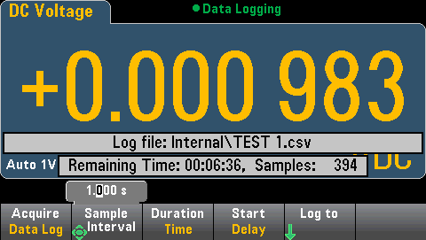
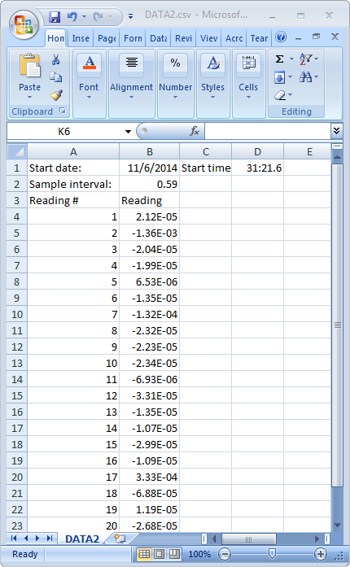
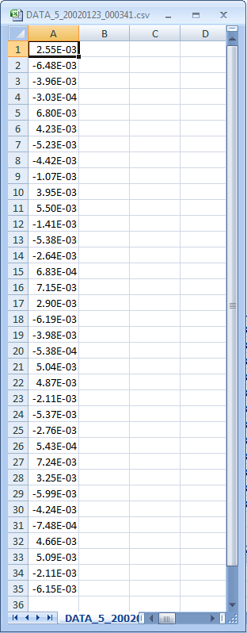

Data Log Mode
The Data Log mode is standard on the 34465A and 34470A only, as is available only from the DMM's front panel. Data Log mode provides a front–panel user interface that allows you to set up data logging into the instrument’s non–volatile memory, or to internal/external file(s), without programming, and without a connection to a computer. Once you have finished collecting data, you can view it from the front panel, or you can transfer the data to your computer. Data Log mode allows you to log a specified number of readings, or readings acquired for a specified period of time, to instrument memory or to internal or external data files.
To select Data Log mode, press [Acquire] Acquire > Data Log. You can then select the Sample Interval (time between measurements - for example, 500 mS), Duration as either an amount of Time or a number of Readings, whether to Start after a Delay or at a specific Time of Day, and whether to Log to Memory or Log to File(s). After configuring the data logging parameters, press [Run/Stop]. Data logging will begin following the specified Delay or at the specified Time of Day.

Loss of data possible - local to remote transition clears instrument memory: When data logging or digitizing to memory, if you access the instrument from remote (send a SCPI or common command)* and then return to local (by pressing [Local]), the readings in memory are cleared and the instrument returns to Continuous mode.
For data logging only, you can prevent this situation by data logging to a file instead of to memory (see Data Log Mode for details). You can also prevent this from happening for data logging or digitizing by taking steps to keep the instrument from being accessed from remote. To prevent remote access, you may want to disconnect the LAN, GPIB, and USB interface cables from the instrument before starting the measurements. To prevent remote access via LAN, you can connect the instrument behind a router to minimize the possibility of remote access. You can also disable the various I/O interfaces from the front panel menus under [Utility] > I/O Config.
To view the status of a data logging or digitizing operation remotely, use the instrument’s Web User Interface. The Web User Interface monitor does not set the instrument to remote.
*When accessed from remote, the instrument will continue data logging or digitizing to completion, and you can retrieve the readings from remote.
Data Log Mode Features
- The Data Log mode is available for DC voltage, DC current, AC voltage, AC current, 2-wire and 4-wire resistance, frequency, period, temperature, capacitance, and ratio measurements. The Data Log mode is not available for the continuity or diode functions.
- The maximum data log rate is 1000 readings/sec. Note: The maximum reading rate may be limited by settings already configured when entering data log mode (particularly NPLC settings for DC and resistance measurements). In this situation, press the measurement function key (for example, DCV) and decrease the aperture setting (either NPLC or Time).
- Data Log mode settings and measurement settings interact. These include the sample interval, destination (memory or file), measurement function, NPLC, Aperture, Autorange, Autozero, Offset Compensation, AC Filter, TC Open Check, and Gate Time. When you specify data log settings that conflict with present settings, the instrument displays a message, and in most cases, adjusts settings to legal values. For example, if you configure data logging for more readings than can be saved to reading memory, the instrument displays a message and reduces the maximum number of readings. When you see a displayed message, such as The data logging Sample Interval increased, you can press Shift > Help > 1 View the last message displayed > Select to view more information.
- The maximum data logging duration is 100 hours, the minimum is 1 second.
- By default, data logging implements auto trigger. The level and external trigger sources are not supported for data logging.
- When the data log mode is running, •Data Logging flashes near the top of the display, and the log file path (when data logging to a file) remaining time, and remaining samples is displayed near the bottom of the display.

- You can store data logging readings in volatile memory for display or write the readings to one or more files.
- When data logging to memory, the data is volatile (not remaining during power off) but can be saved to an internal or external file after data logging is complete. The number of readings you can store in memory depends on the MEM option. With the MEM option, the limit is 2,000,000 readings. Without the MEM option, the limit is 50,000 readings.
- When data logging to file(s):
- You can append the data logging start date and time to the file name using the format: _YYYYMMDD_HHMMSS. For example, for a file named Data, the result will be similar to Data_20140720_032542.csv.
- You specify internal or external and a file name. If more than one file needs to be created to hold the data, the second filename will be appended with _00001, the third filename with _00002, and so on. When data logging to files, the maximum number of readings you can data log to files is 100 hours x 1000rdgs/sec =360,000,000.
- As shown in the sample data file graphic below, when Metadata is On, (see Data Logging/Options for details), each data log file contains a Start Date and Start Time showing when the first reading was taken, the reading numbers, the sample interval, and the reading data. You can specify a comma, tab, or semicolon delimiter to separate the values.

When Metadata is off, only the reading data is saved:

Data Logging and the Trend Chart Display
- When data logging to memory, the trend chart maps each reading to a dot in a pixel column, draws a line between multiple dots in each column, and draws a line from the last reading in a column to the first reading in the next column.
- When data logging to a file, if the instrument determines the readings will fit in memory, the trend chart behaves as it does when data logging to memory. If there are too many readings to save in memory, the trend chart behaves in a manner similar to that of the continuous measurement mode. That is, the number of readings shown per pixel column depends on the reading rate and the selected Time Window.